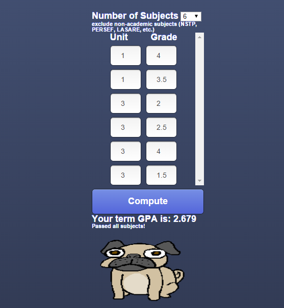
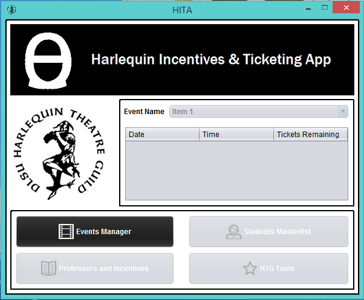
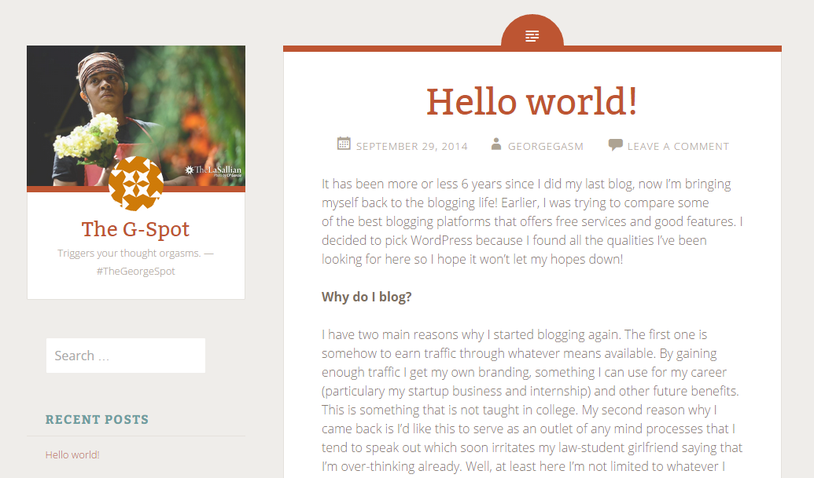

Welcome! Scroll down and take a look at some of my web applications available online.

DLSU GPA Calculator
A simple GPA calculator that follows the DLSU grading
system. This GPA calculator can asses whether a student
have passed all his subjects, is qualified as a dean's lister
(if all requirements are met), or has a failure. Whatever
the result may be, a pug is there to cheer you up!

Customized software/web app
We offer business analysis to come up with a tailored-fit
software/web app for small - medium sized
companies/organizations. The technology that will be
used depends on clients' conditions. If you already
have an idea or dream app, we can brainstorm it out.
This service is offered by: CoDea "Turning ideas into codes"
Blog
I have a blog at WordPress called 'The G-Spot'. It's a deep-thought-diving blog about wonders of life. Although it may not attract as many visitors, it's always a good exercise for the brain to think about things we don't usually ponder on a daily basis.

About
My name is George Vasquez II, I'm 21 years old and currently living in Manila, Philippines.
I'm a graduating student taking up Bachelor of Science in Information Systems at De La Salle University - Manila.
I'm the head programmer of our thesis team and the head business analyst of my startup team.
Be it developer or analyst, I can take on both.
I have experienced building applications and software for companies and organizations of different domains,
both on my own and in collaboration with a team.
If you're interested in getting in touch, you can click on the Contact tab.
CoDea is a startup business that aims to provide software solutions to small-medium sized companies/organizations of any domain. We provide a seamless streamlining of business processes through technologies to make work easier, fun, and productive.
We are also making our way to the field of Software as a Service (SaaS).